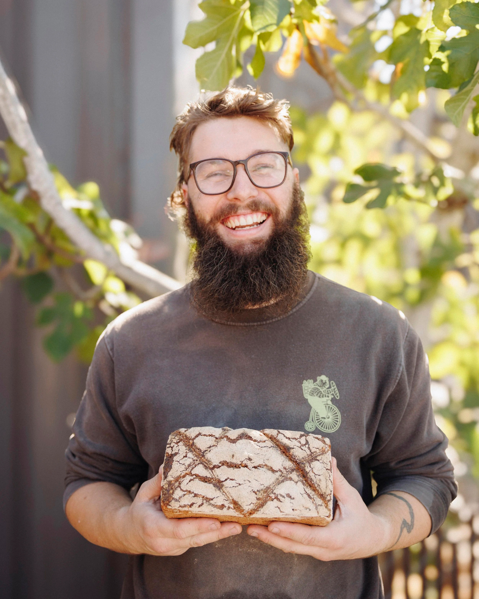
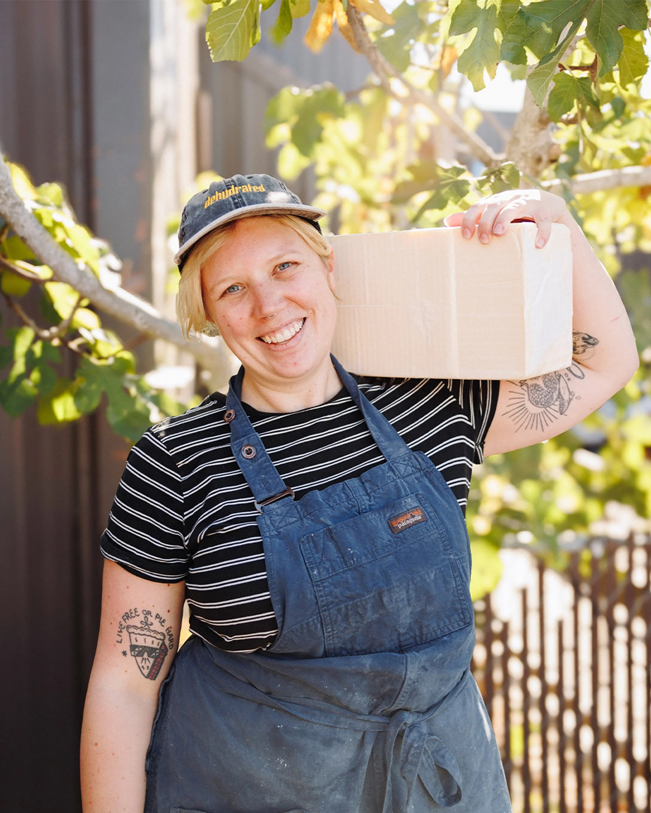
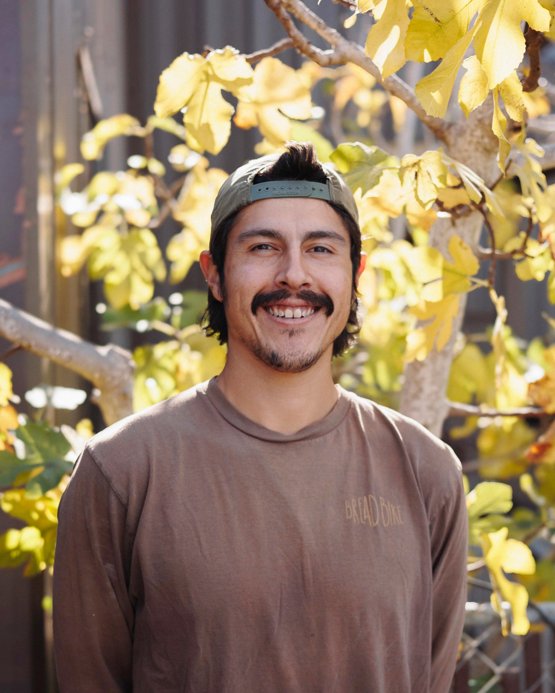
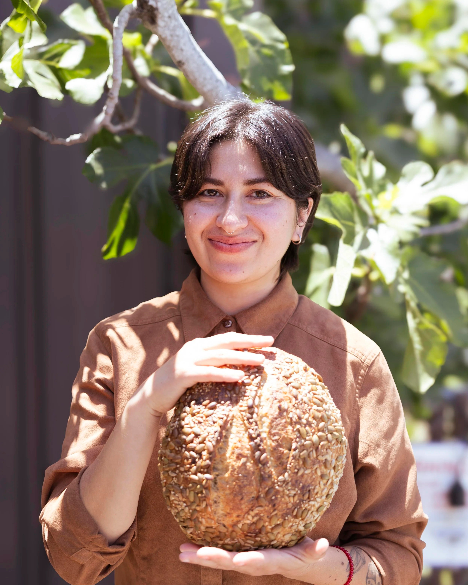
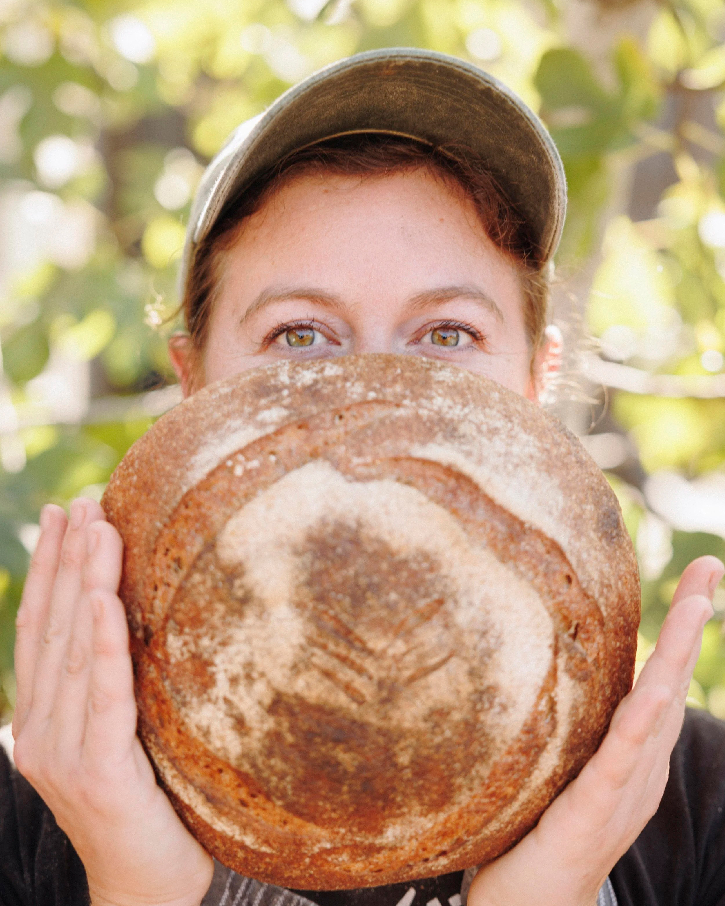
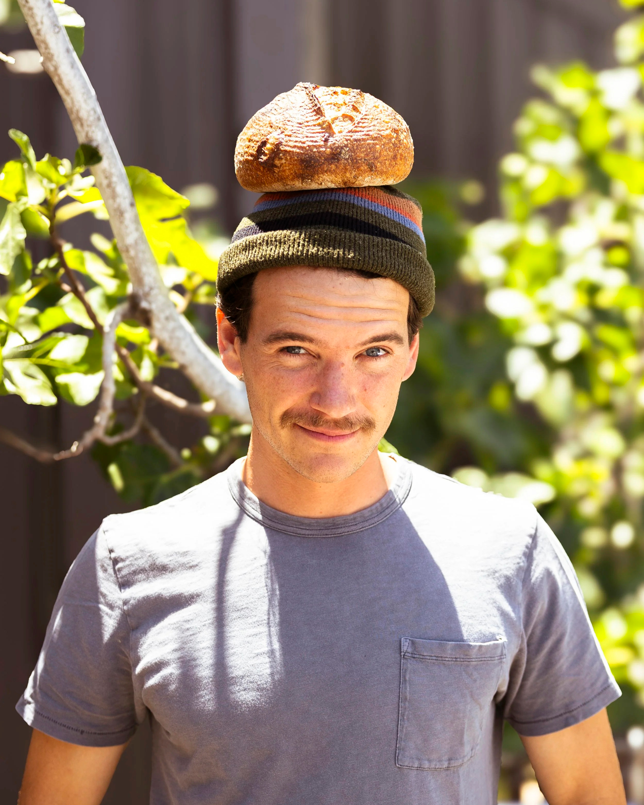

Daily Grain is a small artisan bakery serving naturally leavened sourdough breads and thoughtfully crafted baked goods made with real, high-quality ingredients. We believe that good food starts with simple, real ingredients.
Through our work, we strive to foster a community that cares about its food, its farmers, its planet, and each other. We’re proud to serve our community with honesty, craftsmanship, and a commitment to doing things the right way, every single day.
Our Ingredients
We focus on sourcing high-quality ingredients from growers and companies that align with our ideals. We work with a few different growers that grow organically and regeneratively here in California, and attend multiple farmers' markets each week to source the most current and fresh organic produce that is available.
The Team

Jordan
Jordan leads our sourdough program, shaping and baking our signature loaves each morning.

Dana
Dana crafts our seasonal pastries and sweet treats, balancing creativity with classic technique.

Roz
Roz connects Daily Grain to the wider community through local markets and events beyond the bakery walls.

Kiani
Kiani keeps the front of house warm and welcoming, making sure every guest feels at home.

Emma
Emma keeps the bakery running smoothly day to day, supporting the team and ensuring quality.

Matt
Matt co-founded Daily Grain with a vision of building a bakery rooted in honesty, craft, and community.